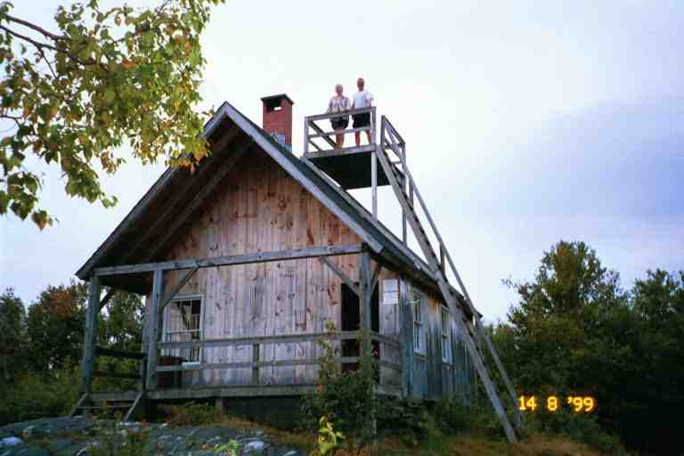
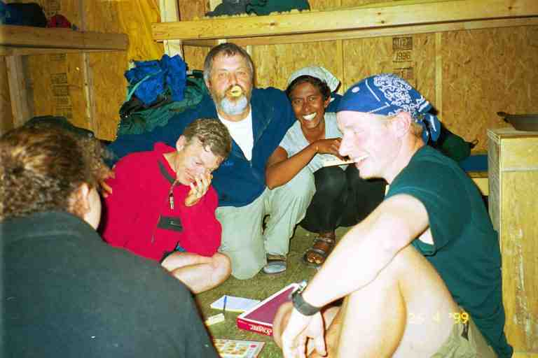
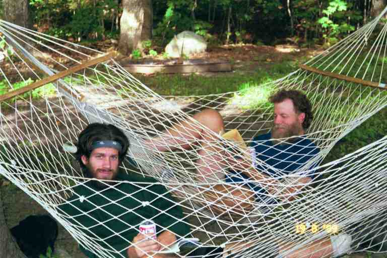
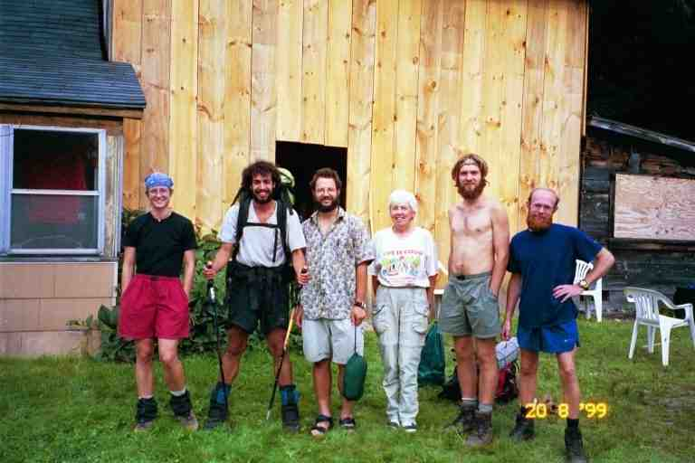
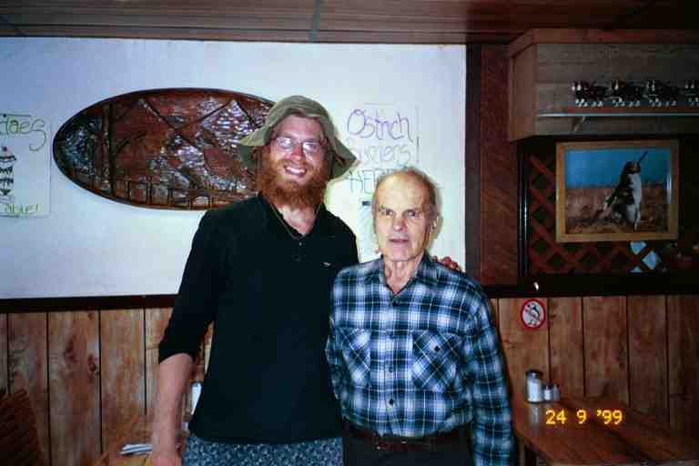

On the morning of August 14 we got back on the trail. PADDLER decided to take a zero mile day. He had spoken to QUIK who told him that his wife NOTIME was now only one day behind, so he decided to wait for her. We left the Inn at the Long Trail with STITCHES and hiked most of the next three days with her. This was different from the normal trail situations where we would meet a hiker on and off during the day and stop at the same shelters at night. The last time we actually hiked with someone was the three days we spent with FOODBAG in Tennessee.
The trail entered the woods right next to the inn. At the 0.6 mile mark we came to Maine Junction, where the AT and the Long Trail diverge. The latter continues north for 165 miles to Canada while the AT makes a sharp turn heading east towards New Hampshire and Maine. The map actually shows a sharp 90 degree turn at this spot.
We soon came to a state park and then walked along the southern shore of Kent Pond where we saw canoes on the deserted early morning beach. To our right we caught a glimpse of Meadows Lodge which sets aside a bunk room for four hikers at an inexpensive rate that includes breakfast. At around the 4 mile mark, we came to a dirt road which we followed for a short distance, arriving at River road which we crossed and then went back into the woods. The distance here is unclear as there was a trail relocation in this area. For some reason STITCHES, was a little upset at having to walk 4.2 miles when the old route was only 3.8 miles. The relocation may also have been responsible for a steep 300 foot climb where the map showed a downhill. According to YOGI's journal, POOPAJACK had an entry in a shelter register, claiming the hill for himself, naming it Poopajack Mountain.
The trail immediately started a steep 1200 climb over a distance of just over 1 mile. STITCHES with her long legs was soon far ahead of us. There were a number of small sharp ups and downs for 2.5 miles on top of the mountain, followed by a descent to Stony Brook Shelter late in the morning. We caught up to STITCHES on the downhill, as she was even more tentative than us on descents.
It was a tough day of hiking. Most of the day was spent in dark woods offering no views from the many hills that we climbed. It was overcast and humid with soft earth underfoot and many exposed roots. The weather and surroundings were affecting our mood. The hike was feeling more like a job which we were accomplishing by habit, not always enjoying the experience. We were also getting a little homesick as this was the last day of our fifth month on the trail.
We were carrying extra water this day as the Data book showed no water sources for the last 10 miles to our destination, Winturi shelter. We soon found that the information had been wrong about the water, as we came to a few streams. We stopped to fill our bags at one stream, and as we got ready to leave, two young southbounders arrived. They were rather quiet and one especially was not in a good mood. But we did find out that they were CASEY and MR FINNEGAN, two brothers from Saint John NB. We were excited to meet someone from close to home. They were named for characters on the Mr Dressup children's show on CBC. Their mood was perhaps due to the fact that one of them was not feeling well, as indicated in their journal (http://trailplace.com/c99journals/625graham/625graham_index.html). More about them in the Epilogue at the end of this chapter.
It sprinkled on and off all afternoon. We leapfrogged a hiker from England who was out doing the trail for a week. Every time he came to the US on business (we seem to recall he was a minister), he would try and find time to do a section of the AT. We told him we were heading for Winturi, and he said he would try to meet us there, although he was not as fast as us.
We met some hikers who told us that Lookout Farm, located a little closer than Winturi, was a great place to stay. We had considered stopping there for the night but the Companion indicated that we were not allowed to stay there, and that there was no water. Because we had loaded up on water, we decided to check it out when we got there. At 6 pm we came to a spot where the trail made a sharp downhill turn to the right, and a small sign pointed up a side trail to Lookout Farm to the left. We took the side trail and soon saw a printed sheet pinned to a tree advising that hikers were welcome to use the cabin, except when the owners or their guests were there.
We walked the 0.2 miles to the cabin and were pleased to find it empty. It was getting late, we were exhausted from the over 15 miles of ups and downs, and we really did not want to walk the 2.5 miles to Winturi shelter, especially with the threatening skies. The building was not a farm but a rustic one room cabin with a small porch out front. Inside, it was simply four walls and a floor and a ladder leading to a loft. There was likely room for at least 30 hikers in here. The Companion says that this is one of the only spots where one can get a view in the thick Vermont woods between the Long Trail Inn and New Hampshire (a distance of 46 miles). Steep steps on the outside of the cabin lead to an observation deck on the roof to get an even better view. Attached is a picture of MA and PA on the observation deck.

I walked back to the trail to pin a note on a tree to inform the Englishman where we were. He never showed up. We sat on the porch to make our supper as it is not safe to use stoves indoors. As usual, cooking our pasta meal took a lot of our water supply, so we had to conserve as there would be no other source until Winturi, the next day. A picture of STITCHES and skinny PA on the porch is attached.

We placed our damp sweaty clothes on the porch railing to air and dry, but soon had to move them inside when a thunderstorm blew in. We sure were glad to be indoors. Other than the lack of water, the only inconvenience was the fact that there was no outhouse. It was a little disconcerting going out to the toilet during the lightening storm because the area in front of the cabin was bare rock.
We checked out the view from the roof the next morning only to find the far peaks obscured by clouds. However, it still was a great view. The last 0.5 miles of the 2.5 mile hike to Winturi shelter were very steep and tricky. We met the Englishman at the junction to the side trail leading to the shelter. He had not seen my note or the side trail to Lookout Farm and had come all the way here last night. He said the descent had been particularly difficult the night before as he was tired and it was getting late. To make things worse, he found no water at the shelter when he arrived.
The Englishman went on his way and STITCHES and I went to check things out at the shelter while MA stayed at the trail junction with the bags. There was a recent entry in the register saying there was no water but STITCHES found an older one saying that water could be found some distance behind the shelter. We located a dry stream but scouted further on and finally found water in an area of high grasses. Filtering was a little challenging as I had to work around a few small trees that had fallen and impeded access. We went back to the shelter and STITCHES made a detailed entry in the register. All day we told hikers about the water source, as there was a rumour on the trail that the source was dry.
It was mostly downhill from there to the Woodstock Stage road. We wanted to hitch from here to Teago's General Store in the little hamlet of South Pomfret a mile to the east. The three of us sat on our packs for over half an hour and watched what little traffic there was, whiz right past us, ignoring our thumbs. Finally we crossed to the shade on the other side of the road and ate some of our own supplies, before going on over another hill. At a dirt road next to a farm, we met a man in a van looking for a hiker that we did not know. There did not seem like much opportunity for a ride so we kept on, going over two more hills. We soon could hear traffic through the trees and sometime later descended to a stream which ran parallel to and below the South Pomfret Road.
We crossed the stream and climbed the steep incline to the road where we found a lady in a car waiting to pick up her thru hiker son MILES (his real name as well as his trail name). There was access to the general store from this road and the lady agreed to drive MA and STITCHES down the hill. However she would not be able to drive them back immediately as she wanted to check out some other road crossings. While the two of them were gone, I stayed with the packs and laid in the grass on the other side of the guard rail.
After quite some time, they returned with the goodies. They had obtained a ride with a store employee who was finishing work. Included in MA's purchases were two tubs of Ben & Jerry's ice cream, a jumbo chocolate chip cookie and a couple of subs (the store was also a deli). We lounged at the side of the road, making short work of the ice cream and cookie. We socialized with DICK CHRISTIAN and a south bound lady from Maine in her late forties called HOLLY DAYS.
DICK decided not to try to get to the store as he wanted to get to the shelter before the threatening rain. He told us that he was worried about his sick hiking partner RICK ROCK who we all had last seen at Lost Pond Shelter. For the next few days, DICK would inquire about his pal from all the north bounders who overtook him, and would give messages for RICK ROCK to all south bounders. HOLLY DAYS was waiting here for her husband LITTLE ENGINE. She explained that she was a lot faster than her husband and that he had to pace himself as he had heart surgery.
STITCHES says: (http://friends.backcountry.net/m_factor/august1.html#1) ***"A front moved in while we socialized at the trailhead and we thought we were going to get wet but hoped we would luck out when the worst of the wind seemed to pass as we were gearing up to start hiking again. Unfortunately, once we started walking, we quickly got soaked in a downpour but it was warm so we just kept moving." ***
It was 4.2 mile hike from the road to Thistle Hill shelter. We met LITTLE ENGINE coming down the hill during the steep climb in the first mile. It seems that most roads in the mountains are constructed in valleys, gaps or notches. As a result we usually heard the sound of traffic far below, a long (and frustrating) time before we caught a glimpse of the road. Also, we generally found ourselves facing a steep climb immediately upon re-entering woods.
There was a little confusion about the shelters in the area, as the Cloudland shelter was still available even though it had been replaced by the Thistle Hill shelter. We went to Thistle Hill shelter, completing a 14.3 mile day. We had now completed more than 1700 miles. DICK CHRISTIAN was here with a few southbounders. We put on some dry clothes at the shelter and hung our wet stuff on one of the many clothes lines strung from the overhang along the front of the shelter. There were wet clothes hanging everywhere. MOOSEBERGER, CORSICAN, and MOOSEBERGER's brother-in-law John (who was now called DOWNHILL JOHN) arrived wet and cold and strung up another line. A few more southbounders arrived but kept on going to Cloudland.
We ate our subs for supper, in order to avoid cooking, and I went to filter water at the stream a little further down the shelter trail. There was a great big surprise waiting for me at the shelter when I got back.
Sitting in the shelter with big beautiful smiles on their faces were TOEJAM and HAIRY STRAWBERRY. (You can check out the smiles in the picture from the Shenandoahs included with chapter 24). We had last seen them on July 1 at the pavilion in Port Clinton Pa, which coincidentally was the place that TOEJAM had quit her 1994 hike. We were afraid that they were off the trail but later heard rumours that they had flipped to Maine and were heading south, which is what they had done.
We were really happy to see them. TOEJAM said they could have continued to Cloudland shelter but she had a premonition that we would be here. We reminisced about our time together, and updated each other on our hikes, including the fact that they had sent their dog ZEUS home. They flipped to Maine because of the heat in Pennsylvania and began hiking south from the base of Katahdin. Their plan was to go south to Port Clinton and then go back and climb Katahdin. They gave us information about some of our friends who were ahead of us. We had been meeting many south bounders lately but TOEJAM said that there were a lot more northbounders. She said the southbounders were having problems making mileage as the northbounders all seemed to want to stop and talk.
The shelter was already full when TOEJAM and STRAWBERRY arrived, but it was a new deep shelter so there was room for them to sleep along the front edge at everyone's feet. We would have to be careful when getting up for the toilet during the night. The privy here was located in woods down a short trail to the right of the shelter. It was the famous and much photographed gazebo privy which had been moved from Cloudland shelter. It looked exactly like a tiny gazebo: it was many sided and the top portion was screened in. I kept looking back over my shoulder when I was in there.
On the trail I was always tired and tried to sleep-in but we usually got up around 6:30 or so. The next morning was different. CORSICAN and friends were always intent on doing big mileage so he set his alarm for 5 am. They tried to keep quiet as they stumbled around packing their bags in the dark. Unfortunately they kept a lot of their things in plastic bags, and the sound of their stuffing items in plastic bags was very annoying. I was wearing my earplugs, but it was no help. STRAWBERRY and TOEJAM took their spots when they finally left.
We were aiming for Hanover NH, where we hoped to stay in one of the frat houses at Dartmouth College. The three of us started the day with a 4 mile hike which ended with a sharp descent to a paved road with a few houses. We followed the road downhill and across the White river to VT 14 which parallels the river. We were now in the little community of West Hartford which consisted mostly of buildings dotted along the highway for about a mile. We crossed the highway and followed it a short distance to the left, stopping at a store with a couple of gas pumps out front (The West Hartford Village Store).
We placed our bags in front of the building and went inside. It was an old building with a small selection of groceries, snacks and other useful items for the small community, such as video rentals. At the back, along the left wall was a lunch counter with six stools. There were no other seats and no tables. We joined CORSICAN and MOOSEBERGER who were just finishing up breakfast. We ordered milkshakes and French toast from the owner who was working at the grill behind the counter. It was a great home-made breakfast, served with real Vermont maple syrup.
The trail continued along Vt 14 for about half a mile before heading up the Tigertown road for another half mile to take us under Interstate 89. STITCHES had gone ahead as she was meeting friends at the CO-OP in Hanover. During this road walk I told MA that I was feeling really great. My energy levels were up, the pack felt good on my back, my feet were fine and I had no other aches and pains. Also I did not have the nervous stomach which had me chewing a Pepto Bismol tablet every morning.
MA replied that she felt terrible. She had the same severe pains that she had in Cheshire. This put a cloud over the rest of our hike that day. We still had to go 9 miles over a mountain to get to Hanover. On the positive side, we would be in town and we were hoping there would be some kind of medical facility.
Fortunately the hike up and over the mountain was relatively easy with soft earth underfoot. Early in the afternoon we heard traffic below us as we descended to Hickory Ridge road where we began a 2.5 mile road walk to Hanover. We started with a steep walk down the narrow country road, which eventually levelled off as it became a residential street. As we proceeded, we kept hoping that we would not need to go to the toilet. We stopped and sat on our bags along a hedge and had a snack. We turned right at a wide busy street which we followed under Interstate 91 and then over the Connecticut river into New Hampshire our 13th state.
We almost immediately noticed college buildings and signs. We had been told that we should try to stay at Alpha Theta and to avoid Tabner which was apparently a real "animal house". Nobody knew where Alpha Theta was, but we were pointed down a street with a number of large older buildings, most of which were fraternity houses. We finally located the place and found ourselves places on the floor of the large sitting room that the students let the thru hikers use.
There were already a large group of hikers here, including CORSICAN, MOOSEBERGER, DICK CHRISTIAN and SWALLOW, a lady that we had never met before. Everyone had a little bit of space to call their own, so as not to confuse their gear. I recall MOOSEBERGER having a spot on the floor behind the couch, under the front window. SINGLEMALT lent MA a needle and thread to fix the strap on her pack. He had been in town a few days, partying some of the time with BALTIMORE JACK and the crowd at Tabner, but was sleeping here because it was more quiet.
We walked the long block to the downtown area and then a few more blocks to the post office to pick up the package with our winter gear and energy bars that we had mailed to ourselves in June from Ted and Jo's place . Unfortunately, the fleece, tuque and gloves would add more weight to our packs. We later showered and changed and returned downtown for an early supper at Everything But Anchovies. When we left, the waitress gave us directions to the hospital which she said was only a mile or so away. We were not sure how we were going to get there, but we headed in the general direction and met STITCHES in front of Ben and Jerry's, with her parents and her friends. They volunteered to drive us to the hospital which was fortunate as it was at least a couple of miles to the highway and then some distance along the highway to the long winding drive leading to the hospital.
To make a long story short, we spent at least six hours at the hospital. MA underwent a number of tests and then had a CAT Scan which discovered kidney stones. They prescribed pain killers and told us to call back in a few days for the results of some tests. They said there would be no problem continuing our hike but that there could be infection caused by the blockage. I explained that we would soon be going through some isolated areas in the White Mountains and asked if they could also prescribe antibiotics, in case a problem occurred. They agreed.
Our next problem was to get back to the frat house as it was nearly midnight. A nurse said that the college had a shuttle that came out to the hospital when called. She called for us, and was told it was already on its way to pick up someone. So we headed out to the waiting room just as the shuttle arrived and we followed a young student on crutches into the vehicle. As the van was pulling away, one of the two security men in the front seat asked where were heading. He then asked me if we were students and I replied that we were thru hikers. In a stern voice he informed me that they could not give rides to hikers. I explained that we were unaware of that and that someone at the hospital had made a call. We kept our mouth shut the rest of the way, hoping that he would be satisfied with having shown his authority.
The next day was a zero mile day to give MA a chance to take it easy. We did our laundry in the basement and did a little bit of running around, including a meal at Lou's Bakery, grocery shopping at the Grand Union, and filling our fuel bottle at the local outfitter. I went to the student computer center and checked our email. There was a message from MERRY HIKER and Mary, and a picture from FOODBAG of himself and MA on Hump Mountain in Tennessee. We met a few hiker friends downtown, including ZAUGAU and HUTCH.
When we got back to the frat house, we were greeted by PADDLER and our old friends WOODPACKER, NOTIME and COURT DOG. We were especially pleased to see COURT DOG, one of our favourite trail people. We had first met him at Rainbow Springs Campground during the snow storm and had not seen him since Woodshole hostel more than 3 months and 1100 miles ago. We had often inquired about his whereabouts from hikers that overtook us and knew he was only a few days behind. Our most recent information was that he was with NOTIME and would be arriving today. I gave him his flashlight which I had been carrying since we last saw him. I should mention that we had not seen NOTIME since May 25 on the Blue Ridge Parkway when her husband QUIK was still on the trail with her.
There were only two or three students in the frat house and I went and gave them $20 to pay for our two nights stay. I don't know if it was coincidence but they were soon on the phone and had some friends over for pizza. We socialized as we all did chores and sorted and repackaged our new supplies. NOTIMES's mail drop was very large, as it included food for both her and QUIK. She wanted to give some of it away, but PADDLER felt she should mail it on ahead. It seemed that PADDLER felt he should look out for her, and she did not appreciate it.
That evening COURT DOG and I walked over to the coffee shop for a relaxing chat while MA stayed at the frat house. When we got back most people had retired for the night. There were bodies all over the place.
The next morning we packed and headed out, stopping at Lou's bakery for breakfast with PADDLER and STITCHES. We left our packs leaned against the front of the restaurant with a few others and wondered how safe they would be on this busy downtown street. The place was packed, mostly with people dressed for a day at the office. The prices were a little high but the portions were large and delicious. There was so much food, that MA and I decided to share an omelette. It was delicious and, like all their breakfasts, it came with a giant muffin.
We did 1 mile of road walk with PADDLER to get us out of town. STITCHES tried to hitch a ride as she had already hiked this section but was unsuccessful. Finally we saw a double blaze on a post and the trail took a right turn and went along the side of a house into the woods. There was a manageable climb of 700 feet over the next few miles and then we settled into lots of ups and downs for the following 7 miles or so. The morning was beautiful, sunny and cool and the walking was good. The climb up and along the top of Moose mountain in the middle of the afternoon was not a problem, although a light rain began to fall. This was followed by a drop of 1500 feet over a distance of 2 miles and a similar climb over an even shorter distance, before finally coming part way down a hill and stopping for the night at Trapper John shelter. We had taken our time and did not find the day's 16.3 miles too difficult.
Well, the walking was good for us, but not for everyone. Early in the morning we had heard a loud scream somewhere behind us. STITCHES and I left our packs with MA and went down the hill to investigate. PADDLER was sitting at the side of the trail in pain. He had done something to his left knee. He had been having problems with the right knee almost since the start and wore an elastic knee support. But now it was the other knee.
PADDLER says: (http://paddler99.trailstories.com/journal/index.cgi?read=293)
*** "High probability that this was my worst day on the trail to date. Something has happened to my left knee my "good" knee. I could barely walk for much of the day. Hobbled into the shelter site and pitched my tent about 6 pm. I spent way too much time today thinking about going home. I could come up with dozens of reasons to go, and could not balance them with reasons to stay out here. Man, this is hard work. Tomorrow is a short day so I'll take it slow and easy. Still going north " ***
On the topic of mood on the trail, that night at the shelter we had a discussion which STITCHES reports as follows: (http://friends.backcountry.net/m_factor/august1.html#1)
*** "We had an interesting discussion around the campfire last night... A number of hikers are depressed and wondering why they are still on the trail. Some are thinking seriously about getting off of the trail. For them, it seems the New Hampshire blues have hit. A couple of us are still gung-ho. I just hope none of their negative thoughts invade my thoughts as I hike." ***
SINGLEMALT was also involved in the discussion and says: (http://users.erols.com/johndsc/JournalPages/week22.htm)
*** "It was time to get out of Hanover. It was becoming another one of those vortexes, and I had to escape. This was not easy since I have been feeling a sort of chronic fatigue for the last few weeks. Other hikers have the same complaint, and I guess we must admit that the trail is finally starting to wear us down. This is not a pleasant thought when I look at the elevation profiles of what lay ahead. .... I have some other thoughts but I'm really just too tired to write them down this evening." ***
The shelter was full so we pitched our tent over to the right of it. Anyhow, it was getting cool and it would likely be warmer in the tent. I went down a small incline on the far side of the shelter to filter water. GENTLEMAN JIM had been down here trying to teach the noisy resident frog to say Budweiser. We then cooked on the edge of the shelter in front of the campfire and I enjoyed a beer or two with our meal.
Where did the beer come from? Well GENTLEMAN JIM had checked his map and seen an abandoned trail and old road leading a mile down from the shelter to a road. He had hiked down, arriving at the road just as a car was going by, heading for a nearby store. He was back with the beer (and oranges for the non beer drinkers) before most of us arrived at the shelter. As GENTLEMAN JIM says: "Don't sweat the small stuff." Most of us did not drink much so he and PADDLER drank most of it, finishing them for breakfast. It raised PADDLER's spirits and he had no knee problems the next day.
We had a nice time socializing in front of the fire during our meal. There was an older gentleman who had just completed the last portion of his section hike of the entire trail. It had taken him years to do so. We applauded him and made a big fuss. There were a few other section hikers here. Our trail conversations must have had an effect on one of them. He thru hiked the trail in 2000, and he recognized us when we stopped at the Village Motel in Atkins Va, in May 2000 on the way back from Traildays.
The next morning we heard PADDLER snoring in his tent as we walked past on our way to the outhouse in the clearing far behind the shelter. The seat in the outhouse was actually the top of a large dining room chair with arms and high back. The arms and the high perch made the job more difficult.
Early in the morning, we met GENTLEMAN JIM next to a dirt road and tried to use his cell phone to call the hospital for MA's results, but we were in a dip and there was no signal. The trail then climbed 2200 feet up Smarts mountain, first to Lambert ridge and then up the steep section to the summit. The climb was a bit of a challenge, and was a clear indication that we were approaching the White Mountains which STITCHES said she could see from the fire tower. We walked by the tentsite in the woods to our right and stopped at the fire warden's cabin a short distance to the left of the trail. It was being renovated and would be closed to the public after the work was completed. MA found an entry in the register from a hiker who had slept here the previous night and found it cold.
The Thru Hiker's Companion said the spring here was unreliable. We would be coming to South Jacob's brook 4 miles further on at the base of the mountain, but we were getting low on water so I took a trail down the hill in front of the cabin to see if I could find the spring. I walked more than 5 minutes without luck and finally returned to the cabin to have lunch with STITCHES and MA on the cabin steps. PADDLER arrived and we both went down again to check for water. We went much further this time and finally located the spring.
A few hours later we had descended the 2000 feet to South Jacob's brook, which we crossed on a narrow suspension bridge, and then immediately began climbing Mount Cube. There was rain on and off again today. It did not affect us much but we had our pack covers on to protect our stuff. It was a rocky climb up Mount Cube, another precursor of the White Mountains a day or two ahead of us. We stopped to rest a few times on large boulders on the side of the mountain and looked back towards Smarts Mountain.
After climbing 600 feet of the total 1500 foot elevation, we came to Eastman Ledges at which point the trail levelled off, contouring the mountain on its way to Hexacuba shelter, our goal for the day. The trail to the shelter was only 1 mile beyond the ledges but it was a long mile. The terrain was rocky, with scraggly conifers covering the harsh landscape. The rocky trail proceeded along the side of the wooded hill in this inhospitable area. We overtook a group of young people on an Outward Bound trip. The leader said they knew of a camping spot nearby, but we could not imagine there being a spot for one tent anywhere near here, let alone room for 20 people.
We were getting really discouraged when we finally came to the shelter trail heading up the hill to our right. It was a 0.3 mile side trail which had been carved through scrub bushes. It climbed through inhospitable terrain, and then up rock steps before making a sharp right turn, heading along the side of the hill to the shelter. It had been a tough 12 mile day.
Hexacuba shelter is a large six sided shelter with no wall on the two sides facing the front. An area had been cleared in this rocky terrain for the shelter but there was no room to set up tents so everyone would have to fit in the shelter. The shelter was about three and a half feet off the ground and we had to get in by climbing on a couple of boulders along the front. We found a spot between DICK CHRISTIAN, who was in one corner, and STITCHES who was sitting on her sleeping pad, leaning on one of the central shelter support posts.
I recall a conversation with DICK CHRISTIAN regarding mileage and breaks. I mentioned that in March we had been taking breaks every hour and that now we only took breaks every 90 minutes or more. DICK said he took very few breaks and usually walked 4 hours non-stop. I found this amazing.
I noticed how thick STITCHES' sleeping pad was compared to ours. Her self inflating Therma-rest was a full length original pad, about 6 feet long and more than an inch thick. She cut many corners to keep the weight of her pack down but refused to sacrifice her comfort at night. Our pads were the three quarter length light Therma-rest pads which were only about 3.5 feet long, ( just enough to protect the trunk of our body) and were about half an inch thick. The pads provide comfort, isolating one from the hard shelter floor or objects under a tent, so the thicker the pad the more comfort. However, they also serve as an insulation against the cold ground in bad weather. There is more chance of getting cold from the ground below then from the cold air. We chose the three quarter length light pad because they did provide a certain amount of comfort and protected the essential portion of our bodies, but were also light weight and took very little room in our packs.
Among the people here when we arrived were two young men who were out for a few days. They were cooking their supper on the campfire just past the shelter. We sat on a log in front of the fire and talked with them for a while. Also here were two young girls, university students from Montreal, who were doing a week long hike. They were falling behind in their schedule, because of the difficult terrain, and PADDLER tried to help them adjust their plans. MA and I spoke at length with them in French. One of them was named Isabelle and was in third year law. There is a great story about her that I will cover in the Epilogue, at the end of this chapter.
During the evening we heard the sound of the Outward Bound kids who had obviously found their tenting spot. Two people who did not show up at the shelter were SINGLEMALT and GENTLEMAN JIM who hiked a further 5 miles to NH 25A , from where they went down the road to stay at Cube Farm and Sugar House where you get to sleep in the hay in the barn owned by a former governor of New Hampshire.
Eventually there ended up being at least a dozen people at the shelter and it was tough fitting everyone in because of the shape of the building. One of the last to arrive was T-ROY. We had first met him after Mountain Momma's in North Carolina, and then seen him for a few days around the Delaware Water Gap Pa area, where he fixed my pack. I will mention him again in the Epilogue. T-ROY had to sleep near the edge of the shelter and MA and I had to step over him to go out in the middle of the night.
It was sprinkling as we got ready to leave the next morning. We were no longer having Fried Pies for breakfast as they were hard to find up north. We had tried having Danish's and other pastries but soon abandoned that and had switched to Honey-Nut Cheerios. We filled our 2-cup meal mugs with cereal, added a generous amount of powdered milk and poured water on it. This provided a lot more protein than our previous choices.
It was 5 miles from the shelter to NH 25A where STITCHES was to meet her friend Sharon who was going to hike with her that day. She was also expecting to meet local trail angel MOTHER HEN who belonged to the same AT mailing list as her. It took us less than 3 hours to get there which is not bad considering that we had to climb the final 1000 feet up Mount Cube and then descend 2000 feet to the highway. The climb up Mount Cube gave us great views of Mount Smarts and the blanket of fog in the valley below.
STITCHES' friend was not at the highway but MOTHER HEN was there, sitting behind her old station wagon, handing out cookies, lemonade, apples and cucumbers. She had previously agreed to bring STITCHES' pack to the new hostel in Glencliff so that she could slack with her friend. PADDLER had arrived, limping, and MOTHER HEN had offered to bring his pack also. This made it easier for us to ask for the same favour when we arrived shortly after, and she agreed. T-ROY did not want to be slacked, as he wanted to carry his full pack from Georgia to Maine (which he did). We later found out that MOTHER HEN did not really agree with slack packing. More about MOTHER HEN in the Epilogue.
We rummaged through our packs, grabbing some food, water and other items we would need to take with us in our small fanny packs. We would be able to slack the 11 miles to the hostel but we would have to be sure to get there, since our packs would be waiting for us there. STITCHES stayed behind waiting for her friend.
A few hours later, I was walking on pungeons through a marshy area, having a lively conversation about folk music with GENTLEMAN JIM, when I decided to stop and wait for MA who was not far behind. I had only been stopped a few seconds when I noticed a few hornets buzzing around me. I glanced down on the ground and saw their nest lying next to the trail. I then remembered that we had seen a few notes from southbounders in the registers about this hornet's nest.
I quickly moved a little ahead and immediately met two southbounders carrying a large can of Black Flag hornet spray. They also had heard about the problem and were going to wage war. The hornets must have known their intent because the two of them were attacked as they walked by. They quickly used their spray to defend themselves. They were each stung a number of times, before they escaped. Unfortunately one of them had dropped his hiking pole and did not want to go back and get it. MA quickly went past the nest without a problem. She grabbed the hiking pole on the ground and threw it over to him.
Some time later MA and I met up with STITCHES' friend Sharon and her dog Bitsy. She had set out late, so decided to start further up the trail and walk towards STITCHES, who was still somewhere behind us. We had a pleasant break with her and were soon on our way again heading over Mist mountain towards our destination, NH 25. Just as we were coming out of the woods, we saw a note attached to a tree. It offered help to thru hikers in the area and was signed by SERPICO, a thru hiker who we last saw in the Smokies at the end of March. He lives not far from here across the border in Groton, Vermont.
We had done 14.7 miles and we headed half a mile down the road to the new hostel. This was the town of Glencliff which is essentially a dozen or so houses strung out along the road. We identified the hostel by the Hikers Welcome sign hung out on the lawn in front of an old house, with a new attached addition. An open door lead into the newer section which once inside revealed itself to be a remodelled garage.
This remodelled section was the hostel, and an another open door lead into the house. There was a small room just inside the house, with a small washer and dryer and also a shelf and cupboard with hiker foods and snacks for sale. A sign advised that Ben & Jerry's ice cream was available in the freezer in the kitchen and pop was in the fridge. The sign said that hikers were free to use the kitchen to cook, and gave a price list for breakfast items. Nobody was home but there was a cup with a large amount of money on the shelf, and hikers were on the honour system. MA and I had a pop and one of the last tubs of ice cream.
We inspected the premises and found an outdoor shower and a porta-potty around the side of the hostel. We then went to grab a spot in the loft above the hostel. The loft was one room with two rows of mattresses set out on the floor, and could accommodate maybe 14 people. There were already a few people here including a couple of southbound thru hikers and four young female section hikers, three of whom were section hiking south and had met up with a girl from Ottawa who had been section hiking with friends and lost them. After talking to her for a while, I began to wonder if her friends had lost her on purpose.
We showered, had a beer (courtesy of SINGLEMALT and GENTLEMAN JIM), and then hung out with everyone. PADDLER and T-ROY each grabbed a hammock in the back yard and relaxed with a beer and a book. FANCY FREE who runs the hostel showed up with supplies including lots of Ben and Jerry's, and I bought another one.

I made a few calls from the pay phone attached to an abandoned building down the road. The hospital said that the results of MA's tests were negative. I then called Nancy and our son Justin to co-ordinate his arrival and his joining us on the trail in two days.
We made supper at the picnic table out back with T-ROY and then had a long conversation with DICK CHRISTIAN as he prepared his meal. DICK CHRISTIAN had the same attitude with regard to eating that STITCHES had with regard to sleeping comfort. He did not cut corners. I watched as he prepared a soup and put it aside and started the preparation of his main meal. He reached into his pack, pulled out a small can of meat, saying that it came from his canned goods section, and added the contents to his meal. He later took out a small can of fruit for dessert, and then had cookies and a candy bar. Once in a while we had carried a small can of chicken or tuna, but DICK CHRISTIAN was the only thru hiker we met who carried lots of cans. He told us he was staying here tomorrow to wait for his friend RICK ROCK who had apparently recovered and was only one day behind. DICK was really excited about it.
Much of the conversation that evening centred on the upcoming mountains. Here is a quote from SINGLEMALT: (http://users.erols.com/johndsc/JournalPages/week22.htm)
*** "There's a new hostel in Glencliff, run by two former thru hikers, and I decided to stay there for the night and tackle Moosilauke tomorrow. It will be one of the toughest climbs yet the AT. The hostel was bursting at the seams with hikers, half of which I knew, and half of which I didn't. Several of us pitched tents out back because the bunks were full, but this was O.K. Gentleman Jim and I hitched 5 miles to a store and back in order to make a beer run, and returned to a heroes welcome.
It's chilly this evening, and there's a great sense of Camaraderie as we look 2700' above us to the summit of Mt. Moosilauke. It's our first Mountain in the Whites, and the first on the AT whose summit is above tree line. We have climbed mountains in the Smokies that were higher, but the climate here is much harsher, and so tree line is lower than it would be in the south." ***
A small correction is needed to the above account. FANCY FREE, a 1996 thru hiker in her late thirties, had recently got married and purchased this house with her husband and turned it into a hostel. She ran the hostel and provided shuttles for a fee, and spent lots of time day hiking in the Whites. Her husband was not a thru hiker. He had a regular job about an hour and a half away and had done the renovations on the hostel.
During our stay I was amazed at their lack of privacy. Hikers were allowed to walk in and use the kitchen at any time, and they even let me go and check my email on their computer. MA and I really appreciated the facilities here, the relaxed attitude and that everything was on the honour system, even the payment for accommodations. On the other hand, many resented the nickel and diming that was going on. The accommodations were $12 per person for the hostel and $6 to put up a tent. There was a charge for using the drier and some said there was a good profit being made on the food. Running a hostel must have been more than they anticipated, because it was sold over the winter and was run in 2000 by a hiking couple.
***********
Off the trail
The next day was Friday, August 20. PADDLER disturbed me when he got up early as he wanted to do big mileage over Moosilauke. Some time after he left, I finally began to stir and was trying to psyche myself into getting up when MA leaned over and told me that her pains were back. We made a quick assessment of the situation including the fact that she had some strong pain relievers and medication but then we considered that we were entering the most physically challenging and most isolated areas of the trip. Within less than a minute, we made the painful decision to get off the trail. I immediately went to call our daughter and our friend Les Gillies. Les volunteered to come and get us although he and I did not know how to get to Glencliff NH.
Everyone in the hostel soon became aware of the situation and news was soon spread in both directions along the trail by the southbounders and by STITCHES who got a ride further up the trail and slacked south back to the hostel.
SINGLEMALT says: (http://users.erols.com/johndsc/JournalPages/week23.htm) *** "I got some really sad news this just before leaving this morning. Ma & Pa are going home. Ma has an undisclosed medical problem that necessitates this. It was a struggle for everyone to hold back the tears, and it seemed terribly unfair that they had hiked 1764 miles and only had 397 miles left, but such is the way of the trail. Hugs and goodbyes were passed around, and it was time to go." ***
STITCHES: (http://friends.backcountry.net/m_factor/august1.html#1) *** "Upsetting news this morning as Ma and Pa have decided to get off of the trail. It is the first time that I have been with friends as they have decided to get off the trail. It was so difficult to say good-bye. Ma has been struggling with kidney stones and has just gotten too uncomfortable to continue hiking. "
DICK CHRISTIAN's journal written by his wife, author Zita Christian: (http://www.smallpond.u-net.com/trail/082099.htm) *** "A retired couple from New Brunswick known as "Ma and Pa" had to leave the trail. Ma feared she had a kidney stone. All the other hikers were sad to see them go. They had started in Georgia and had planned to thru-hike all the way to Katahdin. But, as Pa advised Dick, "Never count your cookies until they're baked." *** PS I never said that.
PADDLER: (http://paddler99.trailstories.com/journal/index.cgi?read=296) *** " I just learned that Ma and Pa are off the trail. Ma's health is poor and they are going home. I'll miss them very much. I'm trying to figure out how to see them and say goodbye. " ***
*********
The rest of the day was spent making phone calls to Nancy and Justin to cancel things and hanging out. A number of people hurried to the hostel to say goodbye, including NOTIME, WOODPACKER, BLACK BEAR, CHILE and COURT DOG. Late in the day RICK ROCK arrived and there was a near tearful reunion with DICK CHRISTIAN. We dumped the rest of our food in the hiker box. Included was the rest of the bag of dried home grown hot peppers that we had received from POTS just after the Shenandoahs. I warned everyone not to make the mistake that I had made of adding too much to our Lipton's and Kraft Dinner, and not to touch their eyes when handling it.

Late in the afternoon, a van arrived with a number of hikers, including BALTIMORE JACK and M&M (who we had not seen since the Hot Springs in early April). They were all going to be slacking up to the next shelter about a mile away, while the van drove their packs up by a nearby dirt road. They had just stopped to see if anyone else was interested in having their packs dropped off.
That evening we socialized with everyone and I had a particularly interesting conversation with COURT DOG about his future plans. Les did not arrive until after dark. It had been a long 11 hour drive. We introduced him and showed him around the hostel. He later said that he found that most of the hikers looked malnourished. We had not realized how thin everyone was. Les also could not understand our enthusiasm for this garage that we had slept in. I guess this was the first sign that the trail had a profound effect on us.
We went to North Woodstock for supper and then on to a motel. The next day we met up with PADDLER and had a meal together and said goodbye. The following day (Sunday), we picked up Justin in the morning at the bus terminal and drove home. Of all the trail angels, Les was certainly the best.
******************************
EPILOGUEThis section is a summary of post hike information relating to our 1999 hike and our trail friends. We believe the trail will be with us always. It has certainly changed us for the better.
In late September 1999, we were in Millinocket Maine, the closest town to Baxter State Park and Mount Katahdin, the northern terminus of the AT. In town, we met many people who had just completed the trail, or who would be summitting in a day or two, including JILEBI, RHUBARB, GRIZZLY, and MO. We did some trail magic, including driving people around and bringing MO's dog Maggie to be boarded, as dogs are not allowed in Baxter State Park. We also met WANDERING TAOIST (http://trailplace.com/c99journals/301naujoks/301naujoks_index.html) who recognized us, and who we had heard about but do not recall meeting. More about him later. When we transported hikers and their packs, we certainly became aware of their odour, and had an even greater respect for the people who had given us rides during our hike.
We met Earl Shaffer, the first person to thru hike the trail. He did his first hike in 1948 at age 29, did it again in 1963 and repeated it again in 1998 at age 79 to celebrate the 50th anniversary of his first hike. (picture of Earl with WANDERING TAOIST)

We drove to Abol Bridge campground where the trail exits the Hundred Mile Wilderness, about 5 miles from the base of Katahdin. We waited around a few hours, hoping to see our friend SMOKEY JOE. During our time together on the trail, we had talked about having him come and visit us, after the hike. We left a message and our number in the trail register at the camp store. We met an exhausted T-ROY coming out of the wilderness. We then met trail angel FANNY PACK who we had seen in Virginia and who had been providing trail magic since Georgia. He showed us his 1999 trail photo album.
When we returned home, we got phone calls from COURT DOG from his father's place and from SMOKEY JOE in Millinocket. SMOKEY JOE said there was a motel room, transportation and an airline ticket, all paid for by his home town in Georgia, waiting for him when he completed the trail. There was also going to be a celebration in his honour when he got home. In short, he would not be able to come and see us.
During the winter months, we were on a number of trail mailing lists, including one from FANNY PACK, and managed to obtain over 100 email addresses of people we hiked with. This allowed us to keep in touch. I will not even attempt to describe what everyone has been up to. We also got updates from the hiker directory at trailjournals.com. We heard who completed the trail and about a number of people who got close. FAL and HERCULES got to the base of Katahdin in a snow storm and decided to go home rather than wait to climb. DIRTY BIRD went into the 100 Mile Wilderness but got sick and turned around less than 110 mile from her goal. PACE got injured around that same area.
We received Christmas wishes from some of our hiking friends, many of whom sent us pictures of themselves at the summit of Katahdin. In the spring we received a CD ROM from POTATO PICKER with all his trail photos. We augmented our trail photos with on-line photos from other hikers.
GRUFF, MAGNOLIA, CREEPER and PALE RIDER shared a house in Mount Killington Maine and had 27 thru hikers over for thanksgiving. WOODCHUCK and PEPPER moved from Texas to Burlington Vermont where they share a house with HOLLY and DOOLEY. BROOKS moved to Alaska to take law at University. His friend and hiking partner LAUREL followed him. I wonder if they are still only friends, as BROOKS's mother insisted. Among the couples formed on the trail are SONGBIRD and CABOOSE, as well as PARANOID and a thru hiker she met up north.
In May we drove down to Trail Days in Damascus Virginia. It is a weekend long annual festival with a park set aside for booths from equipment manufacturers, hiking groups, food vendors, etc. There are events going on all over town including hourly slide shows and presentations by past hikers and trail organizations. We attended a number of slide shows including two by MOTHER HEN's husband, 1994 thru hiker KEMO-SA-BE. These two trail angels will figure again in the story of our 2000 hike.
There were literally thousands of hikers in town, most from the current year and from the year just gone by. Two or three areas in town are set aside for tents, the largest being tent city right downtown, next to the river. We parked in the funeral home parking lot across from tent city and spent three nights sleeping in our truck. Every night there was a drum circle around the fire pit in tent city, where the mostly young crowd chanted and swayed to the beat of tom toms and bongos.
We met more than 60 hikers that we knew from 1999 and some people from one of the mailing lists. As we walked through town we would constantly meet people we knew. In some cases we did not recognize the men without their beards, but we were easily recognizable. One time we were walking down a side street, when a car made a sudden U-turn, stopped in the middle of the street, and a guy we did not know ran over calling out "MA and PA", and came over and hugged us. It was ZIP DRIVE, who created and ran trailjournals.com. He recognized us from our on-line picture.
We had an interesting encounter with WANDERING TAOIST who was accompanied by a very pretty girl who recognized us. It was Isabelle one of the two French Canadian girls we had met on our second last day on the trail at Hexacuba shelter. It seems that TAOIST had met her on a different occasion than us, and sometime later interrupted his hike for a few days to hitch up to Montreal with COURT DOG, to visit her. It is a great story and we find it so out of character for COURT DOG to have done this.
The best part of the weekend was hanging out with friends. In many cases it seemed as if we were still on the trail. We particularly enjoyed our breakfasts (biscuits and gravy for me) with MOM at Cowboys. We had two wonderful evenings at Quincy's. One evening we went in and were accosted by WALKING HOME and PA MULE, as well as SINGLEMALT, GENTLEMAN JIM, GRACE'S SON and GRIZZLY. The second evening we had pizza with JILEBI, RHUBARB, CIRCUIT RIDER and ULYSSES and his new bride.
GRIZZLY was back on the trail in 2000 and was again working at Quincy's during trail days. Another person we met who was back on the trail (for the third straight year) was BAGEL. She again failed to complete the trail in 2000 and has a lot of it still to do because she always starts back in Georgia. BALTIMORE JACK was also in town and was attempting his fifth consecutive thru hike. This is perhaps a good time to mention that LAST EXIT and SEMPER FI DREW both completed the 2700 mile Pacific Crest Trail in 2000.
The highlight of Traildays is Sunday afternoon's hiker parade where thousands of hikers walk through town. Many of the hikers have large bags of water filled balloons which they throw at spectators lining the street. The spectators retaliate with water guns and hoses.
On the way back from Damascus we stopped in Poughkeepsie NY where we spent the night with Bill (MERRY HIKER) and Mary who had slacked us and PADDLER in Connecticut. We also stopped for lunch in Manchester NH, with RAINDANCER who had moved there from Texas. We did not recognize her because she had lost a lot of weight and her hair was now long. There was a tear in her eye when we said goodbye.
This past summer (2000), SINGLETRACK informed us that he would be back on the trail without his wife CARIBBEAN QUEEN, to complete the section of trail he had not done, i.e. from Harper's Ferry WV to Mount Katahdin. He completed that section in just over 2 months and went home but within a few days, the trail drew him back. He hiked the Harper's Ferry to Georgia portion, thus completing a thru hike. He and CARIBBEAN QUEEN now want to go back to finish the sections they did not complete in their first hikes.
During our 2000 hike we will talk about all the trail magic we received from two 1999 friends, BLUET and STITCHES. In September STITCHES drove up from Boston and spent four days with us. In October during our trip to California, we spent a wonderful evening in Oakland at JILEBI and RHUBARB's apartment.
During a backpacking expedition along the wilderness coast of the Bay of Fundy in August 2000, we met a person who recognized us as MA and PA. It was one of the two brothers from Saint John that we met in Vermont. I guess the Appalachian Trail will always be with us.